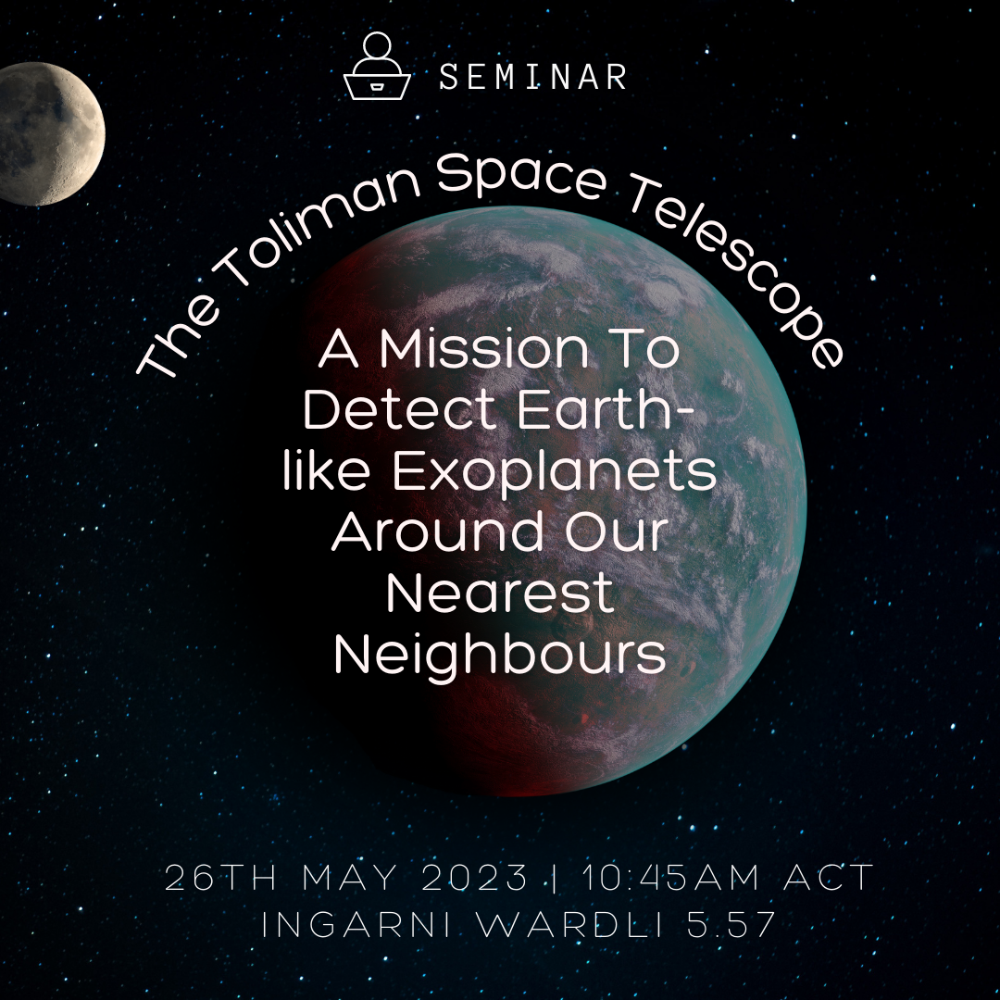
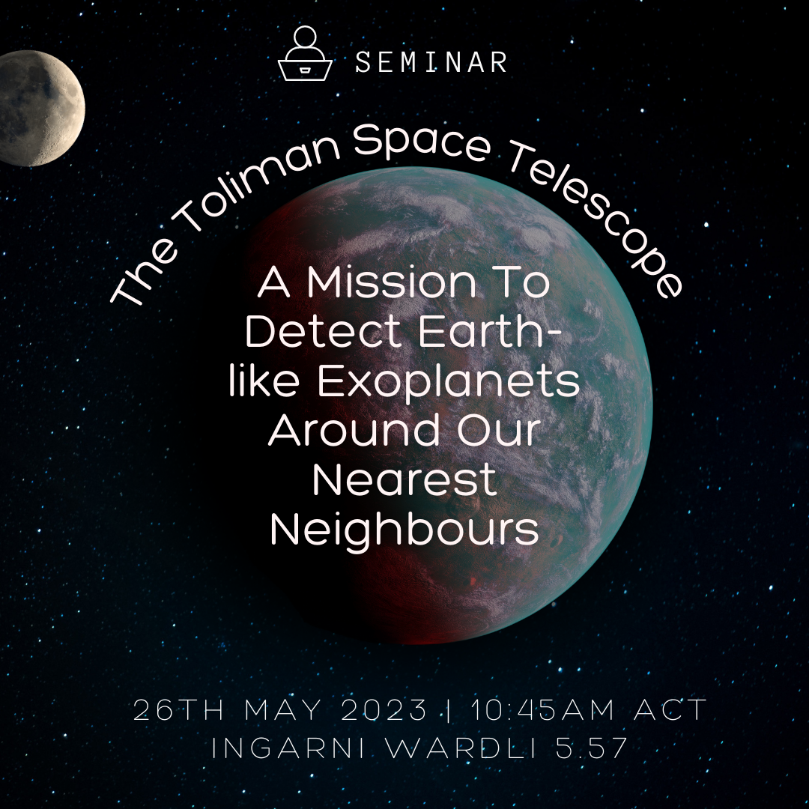

The Toliman Space Telescope
Adelaide University Space Society Club
About
Are We on the Verge of Finding Earth-like Exoplanets in Our Solar Neighborhood, or Do We Lack the Essential Tools? ðŸ”🤔
Find out on the 26th of June at 10:45am in IW 5.57 in this not-to-miss seminar! ☄ Join Dr. Chris Betters and learn all about the challenges faced with detecting earth-analogues as well as the Toliman Space Telescope and how it will use astrometric detection to search for exoplanets targeting the Alpha Centauri system. 😲🛰
This will also be livestreamed online via zoom.
Link: https://adelaide.zoom.us/j/85195338392
Details
Date: 26/06/2023
Time: 10:45am
Duration: 2 hours
Location: Ingkarni Wardli 5.57
 
